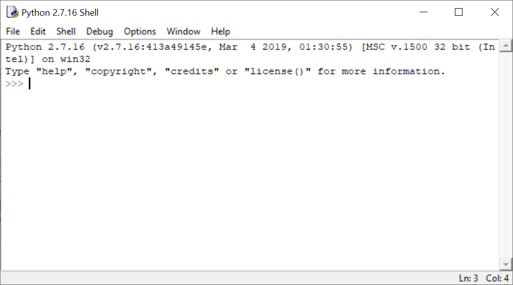

Lekce 3: Jak napsat a spustit program v Pythonu?
Proč Python?
Jazyk Python vyvinul nizozemský vývojář Guido van Rossum koncem 80. let 20. století, první verze spatřila světlo světa v roce 1991. Motivací přitom bylo vyvinout opravdu jednoduchý, efektivní, ale také zábavný jazyk. Poslední aspekt se odráží i v samotném jméně jazyka (česky "krajta"), které je reminiscencí na známou britskou komickou skupinu Monty Python.
Důvodů, proč je Python tou správnou volbou pro pokročilou práci s geografickými informačními systémy, je hned několik:
- Za prvé, programovací jazyk Python je velmi jednoduchý a snadno ho zvládne i úplný začátečník bez jakýchkoli zkušeností s programováním.
- Za druhé, Python je výkonný a vyspělý objektově orientovaný jazyk, navržený pro psaní krátkých skriptů, ale snadno použitelný i pro tvorbu rozsáhlých programů.
- Za třetí, Python je nezávislý na operačním systému, tj. pracuje stejně dobře ve Windows jako v Linuxu a v jiných operačních systémech.
- Za čtvrté, Python je velmi populární, díky čemuž k němu existuje rozsáhlá dokumentace, výukové materiály, internetová fóra a především velké množství knihoven (nebo v pythonovské hantýrce „modulů“ a "balíčků") pro řešení úloh z nejrůznějších oblastí.
- Za páté, Python je tzv. open source program, což mimo jiné znamená, že je zdarma.
- Za šesté, existuje velké množství volně přístupných pythonovských modulů pro práci s prostorovými daty, od vektorových a rastrových analýz až po tvorbu map a jejich publikaci na internetu. Díky tomu si lze pomocí Pythonu „sestavit“ vlastní GIS, a to zdarma (pro více informací viz knihu Erika Westry Python Geospatial Development).
- Za sedmé, Python je podporován jako jazyk pro psaní skriptů v programovém prostředí ArcGIS. Počínaje verzí ArcGIS Desktop 10 je dokonce výlučným skriptovacím jazykem (dřívější verze umožňovaly sice použití i jiných skriptovacích jazyků, nicméně veškerá dokumentace a příklady byly psány v Pythonu). Tato skutečnost je zvláště podstatná v rámci tohoto kurzu, neboť ten je zaměřen právě na ovládání nástrojů ArcGIS pomocí jazyka Python.
Instalace a verze Pythonu
O verzích a jak s instalacemi...
Prostředí IDLE a Python Shell
Programy napsané v Pythonu lze spouštět různým způsobem
Program IDLE slouží k interaktivní interpretaci kódů napsaných v Pythonu. To znamená, že je možné v něm spouštět libovolné části kódů a příslušné příkazy jsou ihned vykonány. Existuje řada jiných interpretů či vývojových prostředí pro Python, nicméně vzhledem k tomu, že IDLE je dodáváno spolu s Pythonem v rámci standardní instalace programu ArcGIS, omezíme se v tomto kurzu právě na ně. Je to výhodné i z toho důvodu, že práce v něm je velmi snadná. Na druhou stranu jistou nevýhodou tohoto prostředí jsou omezené možnosti ladění programů (tj. hledání chyb v kódech).
IDLE vytvořil rovněž Guido van Rossum, a stejně jako samotný Python je zdarma a volně šiřitelný. Název je zkratkou pro integrované vývojové prostředí (anglicky Integrated DeveLopment Environment). Za zmínku stojí, že jelikož se běžně integrované vývojové prostředí označuje zkratkou IDE, přidané „l“ nejspíš odkazuje na jednoho z členů skupiny Monty Python, kterým je Eric Idle.
Prostředí IDLE lze spustit z programové nabídky systému Windows. Po spuštění programu IDLE se otevře interaktivní okno nazvané Python Shell.

Úkol 1. Popsaným způsobem otevřete program IDLE.
Okno Python Shell slouží k vykonávání jednotlivých příkazů a ke spouštění skriptů. Symbol >>> je tzv. výzva příkazového řádku, za kterou je možné psát příkaz. Po stisknutí klávesy Enter je příkaz poslán do překladače a výsledek se vypíše na další řádek:
>>> 1 + 2
3
>>> "Ahoj svete!"
'Ahoj svete!'
Jak je z uvedeného příkladu patrné, po zapsání jednoduchého (nebo i složitějšího) matematického výrazu je tento výraz vyhodnocen a vrácena hodnota výsledku. Tímto způsobem lze vlastně okno Python Shell používat jako jednoduchou kalkulačku:
>>> -(2 + 3)*5
-25
Pro uchování nějaké hodnoty pro budoucí použití lze vytvořit tzv. proměnnou a hodnotu do ní uložit:
>>> x = 2
>>> moje_cislo = 3
>>> -(x + moje_cislo)*5
-25
Do proměnné lze přiřadit i jiný typ hodnoty než číslo, např. text:
>>> a = "Ahoj svete!"
>>> a
'Ahoj svete!'
Okno Python Shell nabízí řadu možností pro usnadnění psaní příkazů. Probereme zde jen některé, další možnosti lze nalézt v hlavním menu pod položkou Edit):
- Historie příkazů. Po stisknutí klávesové zkratky Alt+P (z anglického „previous“) vyvoláme poslední spouštěný příkaz, při opakovaném stisknutí této zkratky procházíme historii příkazů dozadu. Obdobně stisknutím klávesové zkratky Alt+N (z anglického „next“) můžeme procházet v historii příkazů směrem dopředu. Jinou možností, jak znovu vyvolat předchozí příkaz, je umístit na něj kurzor a stisknout enter. Tím je daný příkaz automaticky vypsán na aktuální řádek a dalším stisknutím enter je spuštěn.
- Ukončení překladu. Chceme-li přerušit aktuální vykonávání příkazu, stiskneme Ctrl+C. (Hodí se tehdy, trvá-li výpočet z nějakého důvodu příliš dlouho.)
- Našeptávání. Po napsání libovolné posloupnosti znaků a stisknutí klávesové zkratky Ctrl+Space se otevře seznam všech dostupných funkcí, proměnných a slov jazyka začínajících danými písmeny. Z nich je možné vybírat pomocí šipek nahoru a dolu.
Úkol 2. V okně Python Shell vytvořte několik proměnných a vyzkoušejte jednoduché aritmetické operace. Zkuste procházet historii příkazů.
Psaní a spouštění skriptů
Skript je samostatný textový soubor s kódem, který je možné spustit najednou. Skript je možné psát v libovolném textovém editoru, je nicméně nutné jej uložit s koncovkou .py, aby překladač (např. Python Shell) rozeznal, že se jedná o kód v jazyce Python.
V programu IDLE je možné sát skripty ve speciálně upraveném textovém editoru, který oproti běžným textovým editorům skýtá některé výhody - např. se kód vybarvuje tak, aby se v něm dalo lépe orientovat. Zároveň lze vytvořený skript ihned poslat do překladače a spustit.
Úkol 3. Otevřete nový skript v programu IDLE pomocí File -> New File, případně pomocí
Ctrl+N. Do skriptu napište pod sebe postupně příkazya = "Ahoj",b = "Světe"aprint(a + " " + b). Skript uložte a pomocí klávesyF5, případně pomocí Run -> Run Module jej spusťte.
Program IDLE lze spouštět i pomocí uloženého skriptu.
Úkol 4. Zavřete program IDLE. V prohlížeči souborů vyhledejte vytvořený skript, klikněte na něj pravým tlačítkem myši a zvolte Edit with IDLE.
Python Window v ArcMap
Python je integrovaný do programu ArcMap několika způsoby. Jedním z nich je i interaktivní okno Python Window, jakási obdoba překladače Python Shell. V tomto okně můžeme volat libovolné příkazy Pythonu, zároveň však (jak uvidíme později) umožňuje integrovat do příkazů vrstvy v dané chvíli nahrané v Table Of Contents. Zároveň se výstupní geodata z analýz, provedených v Python Window, automaticky vkládají jako vrstvy do Table Of Contents.
Úkol 5. V programu ArcMap otevřete Python Window a vyzkoušejte si spustit jednoduché příkazy, které jste spouštěli v okně Python Shell.
Shrnutí
V této lekci jste se seznámili s prostředím programu IDLE, zkusili si napsat a spustit jednoduché příkazy v okně Python Shell a napsat a spustit jednoduchý skript. Zároveň jste se seznámili s oknem Python Window v programu ArcMap.